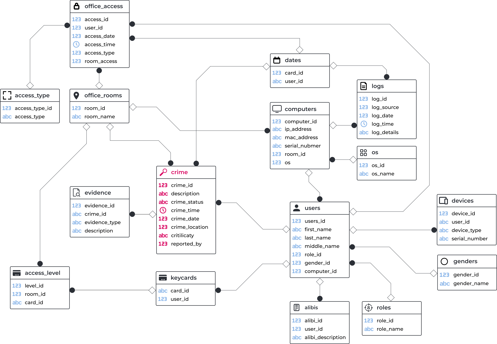

Project case
CRIME SQL
Основой задания стала аналитическая база данных Crime.backup, в которой участникам предстояло провести расследование инцидента: сопоставить данные, найти взаимосвязи, собрать доказательства и на их основе определить возможного участника атаки.
Такой формат позволил приблизить работу с базами данных к реальному расследованию: вместо абстрактных запросов студенты анализировали события, проверяли гипотезы и принимали решения на основе найденных цифровых артефактов.
Легенда
По легенде, в одной небольшой IT-компании почти каждый день происходят новые происшествия. Одно из них связано с утечкой резервной копии базы данных с облачного сервера компании. 25 марта в промежутке с 08:30 до 10:30 был украден бэкап с информацией о клиентах и партнёрах.
Участник выступает в роли приглашённого SOC-аналитика. Ему предоставляется аналитическая база данных с информацией об инцидентах, актуальной до 31 марта.

Алиби